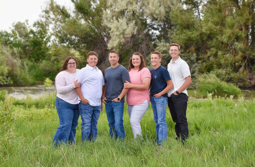

COME AND SEE WHERE YOUR FOOD COMES FROM: Situated on 700 acres on the north side of Gooding, ID, the Pocket Ranch & Creamery has been selling local dairy products to residents of southern Idaho since the 1970s. Although there are lots of interesting things to see at our local ranch, our dairy cows are the main attraction - their milk is used to make everything from cheese, cream and ice cream. Once you've met the herd, you'll have a chance to purchase dairy products made with milk from these cows. Talk about a memorable learning experience!
THIS FARM IS OUR LEGACY: Joe Bingham grew up watching his father and grandfather work hard to raise cattle and provide for their family. Inspired by their work ethic, Joey took over the family business in 2012. Joe is now raising his kids to take care of the crops and livestock - including chickens, which his son Brogan insisted on adding to the ranch. We'd be glad to take you on a tour and show you a typical day on our farm in Gooding, ID. The family of 6 work together to keep the farm and creamery running. All of this doesn’t happen by itself… The family, Joe, Jen, Brynlee, Tyson, Jaxon and Brogan make it happen. It is so amazing and such a fun way to grow up.
THE POCKET RANCH AND CREAMERY IS A THIRD-GENERATION FAMILY FARM. It features: A distribution point that is centered around convenience, where you can pick up your farm fresh products and your favorite cracked before hitting the road or heading home. An ice cream parlor, where the whole family can enjoy a treat!